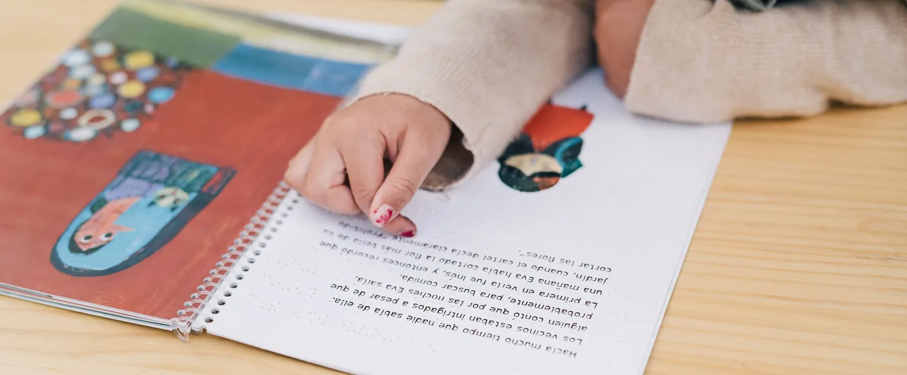

La lectura puede convertirse en una parte muy especial de la vida familiar, pero no siempre empieza con un niño leyendo por su cuenta. Antes de aprender a leer, ya existe una relación con las historias: escuchar cuentos, mirar ilustraciones, elegir un libro, inventar finales o volver una y otra vez a la misma historia.
Por eso, fomentar la lectura no consiste únicamente en conseguir que un niño lea más.
Se trata de crear un entorno en el que los libros formen parte de su vida de una manera natural y agradable.
No existe una única edad para empezar ni una única manera de hacerlo. Cada niño puede acercarse a la lectura a su propio ritmo y a través de intereses diferentes.
Un niño no necesita saber leer para disfrutar de un libro.
Escuchar una historia, observar las ilustraciones, señalar personajes o pasar las páginas también son formas de acercarse a la lectura.
Durante los primeros años, compartir cuentos puede convertirse en un momento cotidiano de conexión entre adultos y niños.
No hace falta que sea una actividad larga.
Unos minutos antes de dormir, después de comer o durante un momento tranquilo del día pueden ser suficientes para crear una pequeña rutina.
El objetivo al principio no es enseñar a leer. Es asociar los libros con una experiencia agradable.
Cuando un niño puede elegir qué quiere leer, la actividad puede resultar mucho más atractiva.
Puede querer:
No siempre necesitamos dirigir la elección hacia aquello que consideramos más educativo.
Los intereses del niño pueden ser una de las mejores puertas de entrada a la lectura.
Es habitual que los niños quieran escuchar la misma historia una y otra vez.
Para un adulto puede resultar repetitivo, pero para ellos la repetición permite anticipar lo que va a ocurrir, reconocer personajes, recordar expresiones y descubrir pequeños detalles que quizá no habían observado antes.
No es necesario evitar los libros que ya conocemos.
Si una historia sigue despertando interés, volver a ella también puede formar parte del hábito lector.
Cuando una actividad que inicialmente era agradable se convierte siempre en una obligación, puede perder parte de su atractivo.
Esto no significa que nunca haya que establecer momentos de lectura.
Las rutinas pueden ser muy útiles.
Pero conviene distinguir entre:
crear un momento habitual para leer
y
convertir cada lectura en una tarea que hay que completar
Especialmente cuando queremos fomentar el gusto por los libros, puede ser interesante dejar espacio para que el niño descubra qué historias le gustan.
No hace falta tener una biblioteca infantil.
Un rincón de lectura puede ser tan sencillo como:
Lo importante es que los libros estén visibles y relativamente accesibles.
Cuando los libros forman parte del entorno cotidiano, es más fácil que el niño los recuerde y los incorpore espontáneamente a sus momentos de juego o descanso.
Si quieres más ideas para organizar este tipo de espacios, puedes leer nuestro artículo sobre organización y hogar.
Una biblioteca infantil no necesita parecer una biblioteca.
Si el niño utiliza los libros, es normal que algunos estén fuera de su sitio.
En los primeros años puede ser más práctico organizarlos de una forma que facilite su acceso que clasificarlos de manera estricta.
Puedes agruparlos, por ejemplo, por:
Pero no es necesario crear un sistema complicado.
La organización debe facilitar que los libros se utilicen, no dificultarlo.
Leer juntos no tiene por qué limitarse a pronunciar las palabras del libro.
Puedes hacer pequeñas preguntas:
También podéis hablar de las ilustraciones o relacionar la historia con experiencias que el niño conozca.
Estas conversaciones pueden convertir la lectura en una experiencia mucho más participativa.
Pero tampoco hace falta convertir cada cuento en un interrogatorio.
A veces simplemente escuchar y disfrutar de la historia juntos es suficiente.
Especialmente en los libros infantiles, las imágenes pueden tener tanta importancia como el texto.
Observarlas permite descubrir detalles, reconocer emociones, anticipar acontecimientos e imaginar lo que está ocurriendo.
Antes incluso de que el niño pueda leer las palabras, puede:
Por eso, un libro puede ofrecer mucho más que el texto escrito.
Algunos niños disfrutan especialmente de los cuentos.
Otros prefieren libros sobre animales, espacio, dinosaurios, naturaleza, experimentos o cualquier otro tema que despierte su curiosidad.
También hay niños que se sienten atraídos por los cómics, las historias ilustradas, los libros de humor o las novelas.
No existe una única forma correcta de acercarse a la lectura.
Si un niño muestra interés por un determinado tipo de libro, ese interés puede ser precisamente el punto de partida que necesitamos.
A veces no es que no le guste leer.
Puede que todavía no haya encontrado un tipo de historia que le interese.
También puede ocurrir que:
En lugar de convertir la situación en una batalla, puede ser más útil probar diferentes formatos y temas.
Un cuento, un cómic, un libro ilustrado, una historia corta o un libro informativo pueden ofrecer experiencias muy diferentes.
Encontrar el libro adecuado puede llevar varios intentos.
Aunque un niño ya sepa leer, compartir un libro con un adulto puede seguir siendo una experiencia agradable.
A medida que crece, la forma de compartir la lectura puede cambiar.
Algunas veces puede leer él.
Otras veces puede leer el adulto.
También podéis turnaros o comentar juntos lo que está ocurriendo.
No es necesario abandonar la lectura compartida simplemente porque el niño ya sea capaz de leer solo.
El paso de los cuentos breves a libros con capítulos puede producirse de forma progresiva.
Al principio puede ser suficiente con leer un capítulo cada vez.
También puede ayudar elegir historias que tengan:
No hay que apresurar el proceso.
La lectura más extensa llegará cuando el niño esté preparado y encuentre historias que quiera seguir.
La lectura no tiene que estar limitada al momento de dormir.
Puede aparecer en muchos momentos:
También forman parte de la lectura cotidiana otros textos que encontramos fuera de los libros:
De esta manera, el niño puede descubrir que leer sirve para muchas cosas diferentes.
Una historia puede ser el comienzo de una experiencia.
Un libro sobre animales puede despertar interés por visitar un zoológico o aprender sobre una especie.
Una historia ambientada en un lugar concreto puede llevar a buscarlo en un mapa.
Un libro sobre el espacio puede despertar preguntas sobre planetas y estrellas.
Una historia sobre una época histórica puede convertirse en una oportunidad para conocer más sobre ella.
La lectura puede ser una puerta hacia otras formas de descubrir el mundo.
La lectura es una parte importante de la cultura infantil, pero no es la única.
Los niños también pueden descubrir diferentes formas de expresión a través de:
No hace falta convertir cada experiencia en una actividad educativa.
Visitar un museo, escuchar música, asistir a una obra o descubrir una exposición puede ser simplemente una experiencia para disfrutar juntos.
Acercar a un niño a la cultura no significa organizar constantemente excursiones.
Puede comenzar con cosas muy sencillas.
Escuchar un tipo de música diferente.
Observar una ilustración.
Visitar una biblioteca.
Entrar en una librería.
Conocer un museo pequeño.
Ver una obra infantil.
Descubrir una tradición local.
Leer una historia sobre otra época o lugar.
La curiosidad puede aparecer a partir de experiencias muy pequeñas.
Una biblioteca puede ofrecer algo especialmente interesante: muchas historias sin necesidad de comprar todos los libros.
Visitar una biblioteca permite descubrir nuevos temas, hojear libros, elegir historias y convertir la lectura en una actividad fuera de casa.
Además, puede ayudar a que el niño entienda que los libros forman parte de espacios compartidos por muchas personas.
No hace falta acudir con un objetivo concreto cada vez.
A veces, simplemente explorar puede ser suficiente.
Los niños observan lo que ocurre a su alrededor.
Si ven que los adultos leen, consultan libros, revistas o periódicos, buscan información o disfrutan de una historia, pueden percibir la lectura como una actividad cotidiana y no únicamente como algo relacionado con el colegio.
No hace falta hacer de esto una demostración.
Simplemente leer delante de ellos también comunica que los libros forman parte de la vida diaria.
Cada niño desarrolla sus intereses y habilidades a su propio ritmo.
Puede haber niños que lean mucho y otros que prefieran dedicar más tiempo a otras actividades.
También puede haber etapas en las que la lectura ocupe un lugar central y otras en las que pierda protagonismo temporalmente.
Comparar constantemente a un niño con otros puede convertir una actividad agradable en una fuente innecesaria de presión.
Es más útil observar su evolución y acompañar sus intereses.
Si buscas orientación sobre qué puede tener sentido en cada etapa, puedes consultar nuestras páginas por edades.
No hace falta establecer objetivos complicados.
A veces es preferible crear pequeños momentos que puedan mantenerse con naturalidad.
Por ejemplo:
unos minutos de lectura antes de dormir.
Un cuento después de la merienda.
Un rato para elegir libros durante el fin de semana.
Una visita ocasional a la biblioteca.
El tiempo exacto importa menos que conseguir que la lectura tenga un lugar reconocible dentro de la vida familiar.
Cuando la lectura está relacionada con el colegio, puede resultar más difícil separar el aprendizaje del placer.
Una forma de compensarlo puede ser mantener otros momentos de lectura completamente libres de tareas.
Elegir juntos una historia.
Leer un cómic.
Escuchar un cuento.
Releer un libro favorito.
Buscar información sobre algo que le interesa.
Así, el niño puede descubrir que leer no sirve únicamente para hacer deberes.
Quizá uno de los mayores valores de leer juntos no esté en cuántas páginas se leen.
Está en el tiempo compartido.
Un adulto y un niño sentados juntos escuchando una historia pueden estar simplemente disfrutando de unos minutos de tranquilidad.
Se pueden comentar personajes, reírse de una situación, imaginar qué ocurrirá después o recordar otras historias.
Estos pequeños momentos pueden terminar formando parte de los recuerdos familiares.
Fomentar la lectura no consiste en conseguir que un niño lea un determinado número de páginas cada día.
Consiste en crear oportunidades para que descubra que los libros pueden entretener, despertar curiosidad, hacer imaginar, enseñar cosas y compartir momentos con otras personas.
Puede ayudar:
No todos los niños se enamoran de los libros de la misma manera ni al mismo ritmo.
Pero cuando la lectura encuentra un lugar natural dentro de la vida cotidiana, deja de ser simplemente una actividad que hay que hacer y puede convertirse en una experiencia que apetece compartir.